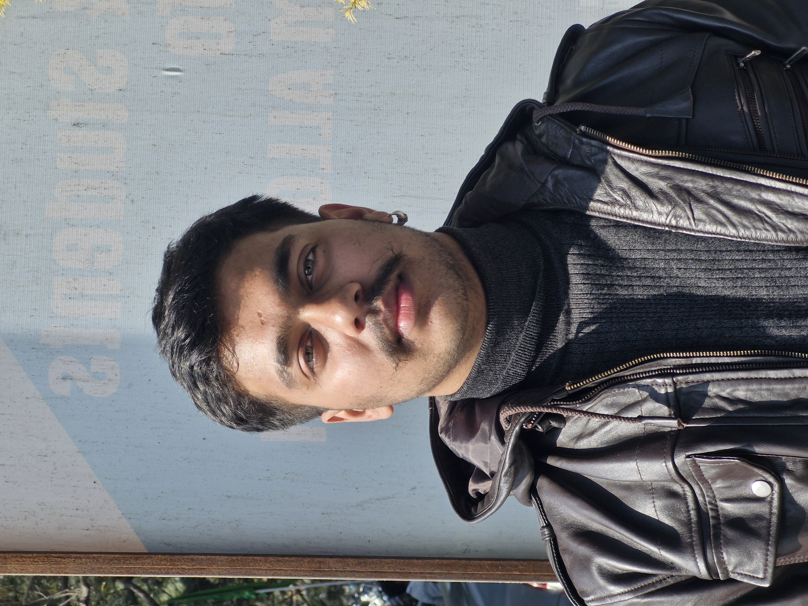

Hello! I'm Jyotiraditya Singh, a passionate Full Stack Developer with a strong foundation in building modern web and mobile applications. I am a quick learner and a dedicated team player, eager to contribute to an organization's success by leveraging my knowledge and passion for technology.
Motivated to learn and grow, I seek challenging opportunities to apply my skills and gain practical experience in the field of computer science. I believe in continuous improvement and staying updated with the latest technologies.
Jyotiraditya Singh
19 Years
BCA (FSD)
India